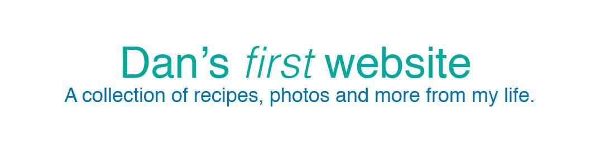
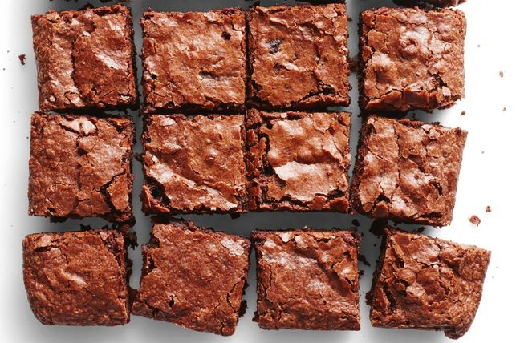

Brownies Recipe
This recipe was adapted from here

Photo credit: taste.com.au
Ingredients:
- 2 cups gluten free flour
- 2 cups castor sugar
- 3/4 cup cocoa powder
- 1 teaspoon baking powder
- 1 teaspoon salt
- 1 cup water
- 1/2 cup vegetable oil
- 1/2 cup melted Nuttalex
- 1 teaspoon vanilla essence
Method:
- Preheat oven to 180C and line a baking tray with baking paper.
- In a large bowl stir together the flour, sugar, cocoa powder, baking powder and salt.
- Pour in water, melted butter,vegetable oil and vanilla; mix until well blended. Spread evenly in baking tray.
- Bake for 30 to 40 minutes in the preheated oven until the top is no longer shiny. Let cool for at least 10 minutes before cutting into squares.
For my recipe ideas send me an email!
Top